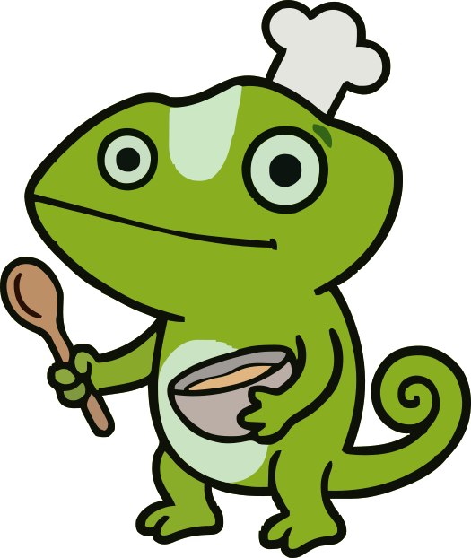
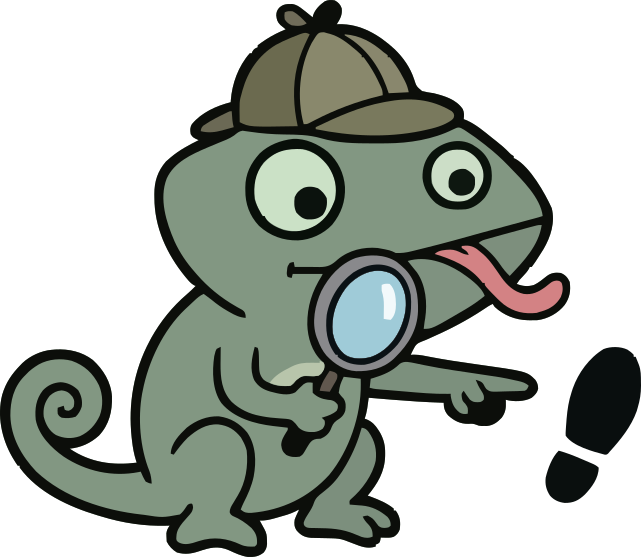

Cómo Jugar a XIRO!
Conoce nuestras dinámicas y tipos de preguntas
1. Banco de Preguntas
Se toman preguntas de un banco específico y se presentan a los jugadores de forma totalmente aleatoria. Ideal para repasar un tema concreto.

2. Mezcla de Preguntas
Permite seleccionar varios bancos de preguntas y elegir cuántas preguntas aleatorias extraer de cada uno. Las preguntas seleccionadas se mezclarán en un orden aleatorio al presentarlas.

3. Juegos Personalizados
Tú tienes el control. Eliges las preguntas una a una desde los distintos bancos y configuras su orden exacto de aparición para una presentación estructurada.

4. Trivial
¡Modo de tablero clásico! Se lanza un dado y la ficha avanza. Dependiendo de la casilla en la que caiga, se presentará una pregunta aleatoria de la categoría correspondiente al color de la casilla.

Quiz
Pregunta clásica con varias respuestas posibles, pero solo una es la correcta.

Encuesta (Survey)
Sin respuestas correctas o incorrectas. Sirve para recoger la opinión de la audiencia presentando diferentes opciones.

Aproximación Numérica
Los jugadores deben introducir un número intentando acercarse lo máximo posible al valor exacto ganador.
Ordenar Secuencia (Order)
Se presenta un listado de elementos que el jugador debe arrastrar y colocar en el orden lógico correcto.

Adivinar Palabra (Word Scramble)
El reto consiste en encontrar una palabra oculta ordenando las letras desordenadas que aparecen en pantalla.

Opción Múltiple
Similar al Quiz, pero en este caso puede haber entre 1 y 6 respuestas correctas simultáneamente.